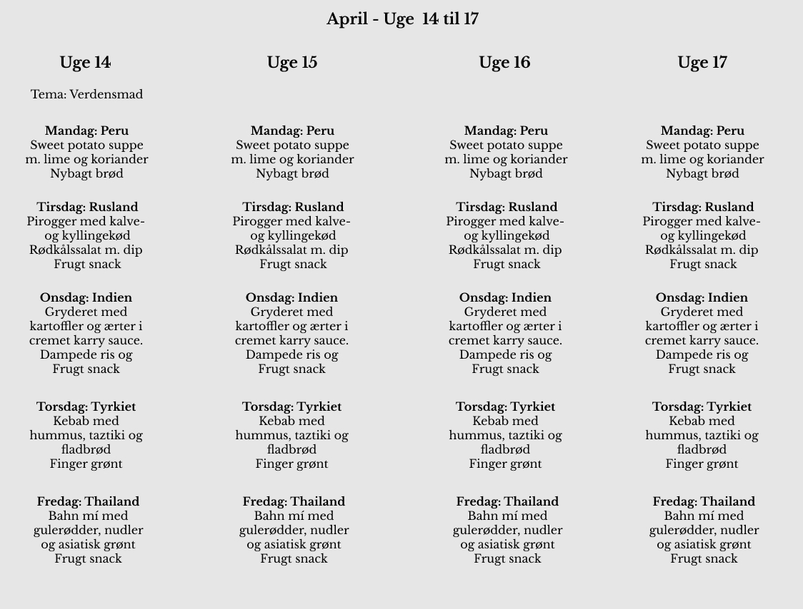

Velkommen tilbage Stefan!
Madskolen SMAG!
Madskolen på Kalvebod Fælled Skole er et produktionskøkken hvor , der bliver fremstillet mad med fokus på maddannelse, sundhed og økologi. Målet med madskolen er at gøre eleverne nysgerrige og modige på at samge nye råvarer, samt sunde kostvaner. Madskolen skal understøtte elevernes lyst og madglæde, og lære dem nye vaner, der skal til for at kunne træffe sunde valg, og ikke mindst give eleverne energi til hele skoledagen.
Kommende bestillinger
Du har bestilt følgende
Mikka
1 x Marts Menu
Felix
1 x April Menu
i alt
1067,50 DKK
Har du spørgsmål til din bestilling?
Skriv til os herApril menu
Bestil senest indenfor 5 dage!
Mikka
April
Maj
Juni
i alt
1067,50 DKK